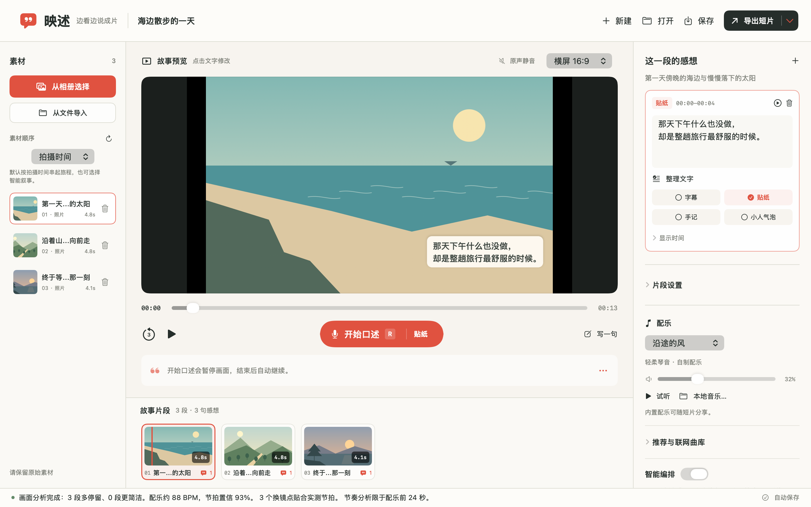
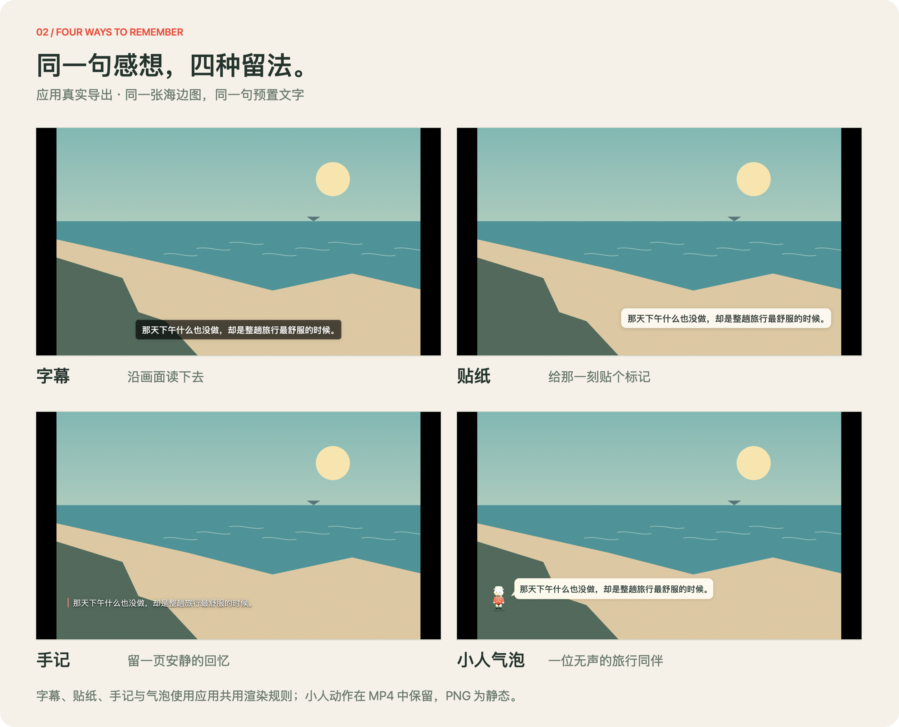
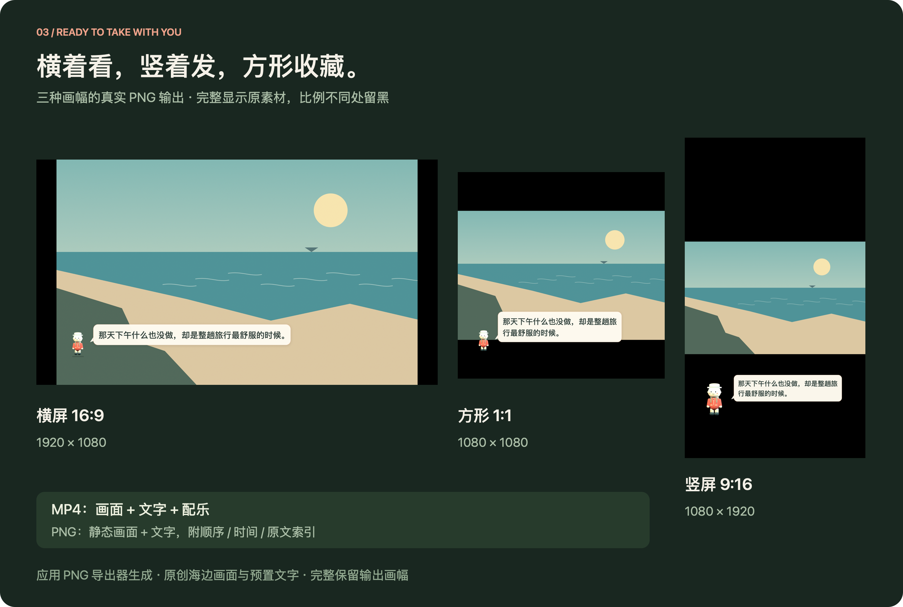

把风景留下，把感想说出来。
照片记录你去过哪里。
你说的话，留下当时的自己。
映述，让它们一起成为短片。

真实应用视图的离屏渲染 · 使用项目原创生成示例与预置文字，不含用户照片；本图用于展示界面，不能作为语音识别效果的证明。
留一句属于你的感想。
先沉浸，再表达。
灵感不用追着画面跑。
导入照片和视频，静音观看。想说时按 R，画面和配乐停下来；结束口述后，文字落到刚才的片段，再从原位继续。
可点击按钮或按 R 推进 · 流程示意不使用麦克风，不调用 AI
这段交互使用固定示例文案，仅说明操作节奏。实际处理需要等待模型；可取消，识别与整理结果需要自行检查。
同一句感想，
四种留在画面里的方式。
从安静的字幕，到陪你看风景的小小旅行者。文字随片段保存，在预览与导出中保持同一套排版。

字幕
把画面留在中央，
让文字轻轻落在下方。
贴纸
像旅行中收下的便签，
给一句感想一个落点。
手记
留一些书写的呼吸，
让片刻有自己的语气。
小人气泡
无声的小小旅行者，
陪着文字一起出现。
能放成短片，
也能留成一张。
导出 MP4，把画面、感想和所选配乐放在一起；导出带字 PNG，把这一刻发给朋友，或带去继续创作。
口述只用于生成文字。成片不包含口述录音或素材原声。

模型准备好后，
感想在本机成形。
本地 AI 模式把识别、文字整理与渲染串在一起。App 包不含模型；准备好独立运行环境和模型后，就能沿这条路径工作。
声音 → 识别文字
Qwen3-ASR / MLX
音频仅在内存收集，
不加入项目或成片。
Qwen2.5 文字整理
在本机辅助整理表达。
无需第三方 API Key，
保留识别原稿，可随时还原。
文字回到画面
预览与导出共用渲染层。
同一套字形、定位与避让，
输出 MP4 或 PNG。
未开启可选云端文字整理时，本地 AI 识别与整理不上传口述音频、文字、照片或视频。首次准备运行环境与公开模型需要联网，模型与运行环境独立于 App 包。
整理仅作辅助。数字、保护词与内容保留检查不通过时，保留完整识别稿并说明原因；结果仍需自己检查。
这里展示模型备妥后的本地 AI 模式。可选文字整理、系统语音服务、iCloud 素材与联网曲库有各自的联网边界，详见本地 AI 说明。


模型帮助表达，事实由你确认。
识别可能听错，整理可能不合适。保守检查并不能证明语义正确，应用保留识别原文与还原入口。
让作品离开编辑器。
选择画幅、文字样式和配乐，导出短片；也可导出带字 PNG，在你熟悉的工具里继续创作。
把素材留在手边。
项目保存原素材的引用。移动项目到另一台 Mac 时，需要同时携带素材，并准备独立本地 AI 运行环境。
把那一天，
讲给未来的自己。
从一段海岸、一阵山风，和一句你自己的话开始。
Apple Silicon · macOS 14+ 构建目标 · 本地 AI 需单独准备 Python / MLX 与模型。当前构建为本地 ad-hoc 签名，未做 Apple 公证；跨机型与系统的实际效果仍需验证。